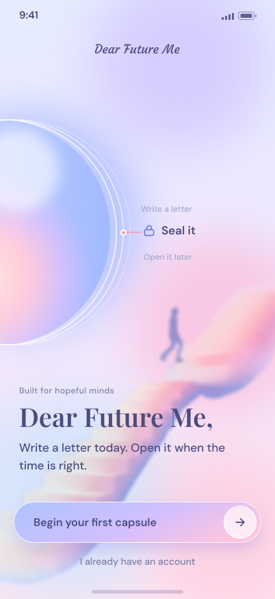
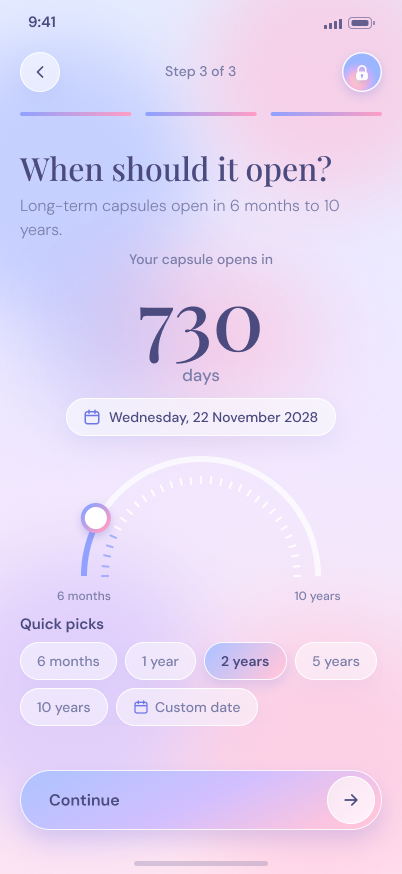
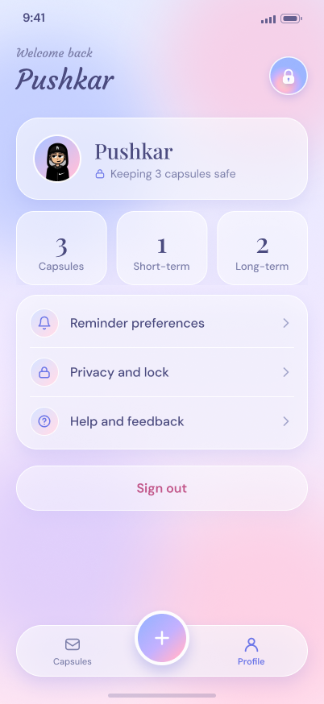

Time Capsule
Dear Future Me. Write a letter, set a goal, seal it, and open it when the time is right.




The problem
People set goals and save memories, but both get lost in notes apps and camera rolls. Nothing brings you back to them at the right moment, so small goals get forgotten and big ones lose their meaning.
Process
- Problem understanding and target users, mapped into a user flow before any screens.
- Two capsule types. Short-term for low-effort goals and tasks; long-term (6 months to 10 years) for high-effort goals and achievements. A "choose capsule type" step leads into goal-aware create screens.
- Simpler navigation: just Capsules, Create and Profile, with "add memories" folded into the write screen to remove a step.
- A visual rethink. I started with a dark "Midnight Keepsake" palette, then moved to a dreamy pastel one so the app feels hopeful and personal rather than heavy.
- State you can feel: sealed capsules show a lock orb and a countdown; opened ones turn warm and bright.
Key screens
Pick unlock date uses a dial plus quick picks (6 months to 10 years) and shows the result in days, e.g. "730 days", so the wait feels real.
Sealed capsule shows a glowing lock, a countdown and a gentle line of encouragement: "A big goal. Worth every day of the wait."
Visual system
Playfair Display for headings and letters gives a handwritten, keepsake feel; a clean sans keeps buttons and labels easy to read. Built on an 8pt grid with 20px side margins.
Result
A clickable prototype linking Welcome → Home → Create → Sealed → Opened, built with Figma variables and text styles.
What I learned: changing the palette changed how the product felt more than any layout change did.